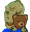
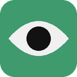
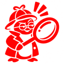

STRAWWAFFLE
If you are reading this, you were meant to. The projects below are real. Most of them concern destiny.gg. Take a tab. Tell no one. (Tell everyone.)
-
EXHIBIT 01

Glorp
An unofficial destiny.gg app for Android: chat, bigscreen in a native player, and a few things of its own.
it's already on your phone VERIFIED -
EXHIBIT 02

DGG Radio
A shared music station. Queue YouTube or SoundCloud tracks and take turns as the DJ.
everyone hears the same song. EVERYONE. -
EXHIBIT 03

DGG Karaoke
Karaoke in the browser. Sing with a microphone or your phone, and get on the leaderboards.
they keep score -
EXHIBIT 04

dgg-obs-tools
Chat and viewer overlays for OBS: destiny.gg, Kick, YouTube and Twitch. Nothing to install.
DO NOT DISCUSS -
EXHIBIT 05

OBS overlays
Overlays that run from a URL. Text that bounces like an old DVD menu.
-
EXHIBIT 06

TrackSnarkPac
Who donates across political YouTube: superchats on Pisco, Counterpoints, The Soy Pill and Lib & Learn.
follow the money -
EXHIBIT 07
The 2026 wave
Did moderates or progressives drive the 2026 midterms? Every race against 2024, with outside spending.
PENDING
“Utopia Finale” by Cristobal Tapia de Veer, from Utopia (Original Television Soundtrack), Silva Screen Records, 2013. Played from YouTube.